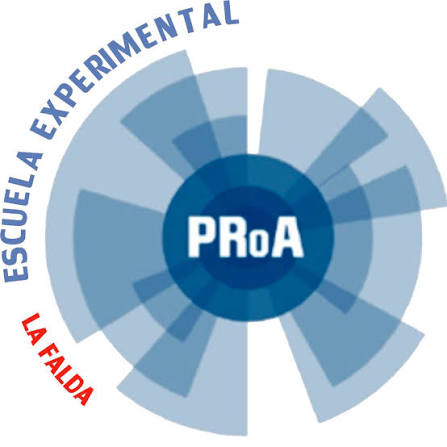

Peligro meteorológico · FWI
Consultá el índice diario en el visor de IDECOR. No se replica un valor sin una fuente de datos accesible.
Abrir visor FWI
BIODIVERSIDAD DE CÓRDOBAMONTE VIVO · ARGENTINAPREVENCIÓN · VALLE DE PUNILLA
Consultá mapas oficiales, entendé qué información está disponible y conocé cómo prevenir incendios forestales.
Consultar mapasESTADO DE LA INFORMACIÓN
Los mapas se consultan directamente en sus sitios oficiales. La hora indicada es la de consulta desde esta página, no la fecha de generación de los datos.
Consultá el índice diario en el visor de IDECOR. No se replica un valor sin una fuente de datos accesible.
Abrir visor FWITemperatura, humedad, viento, precipitaciones y estimaciones a 24, 48 y 72 h: consultá las fuentes oficiales.
Consultar estimaciones del SMNNo hay un feed de alertas integrado. Esto no significa que no haya alertas vigentes: verificá los canales oficiales.
Consultar alertas del SMNInformación meteorológica y alertas: Información temporalmente no disponible. Consultá las fuentes oficiales.
VISOR INTERACTIVO
Elegí una capa. La cartografía y su leyenda pertenecen a IDECOR; comprobá allí la fecha de los datos y la escala de consulta.
Riesgo local territorial: una capa regional de amenaza y vulnerabilidad, distinta del índice meteorológico diario.
Abrir mapa oficialEl mapa territorial para Punilla publica tres niveles. No se les asigna un valor a las localidades desde esta página.
Referencia general, no es la leyenda del mapa IDECOR ni una medición actual por localidad.
CONSULTA POR LOCALIDAD
Seleccioná una localidad de Punilla para ver qué datos puede mostrar esta página y abrir el mapa oficial.
Elegí una localidad para consultar la disponibilidad de información oficial.
COMUNICADOS
Esta página no recibe comunicados en tiempo real. Consultá directamente a los organismos; una alerta preventiva no confirma un incendio.
No es posible confirmar desde este sitio si hay alertas vigentes. Revisá las publicaciones oficiales antes de realizar actividades al aire libre.
El mapa de áreas afectadas por incendios es una capa histórica: no confirma un incendio activo. Consultar fuente IDECOR
CUIDAR ES PREVENIR
Respetá siempre las restricciones vigentes y las indicaciones de las autoridades locales.
No enciendas fogatas fuera de los lugares habilitados.
No arrojes colillas ni fósforos encendidos.
No quemes residuos, pastizales ni restos de poda.
No dejes basura; algunos residuos pueden iniciar o agravar un fuego.
Evitá actividades que produzcan chispas cuando haya peligro.
Avisá de inmediato ante humo o fuego y seguí las indicaciones oficiales.
FUENTES Y ALCANCE
Los mapas son publicados por organismos oficiales. Esta página no predice el peligro ni sustituye a Bomberos, Defensa Civil o autoridades provinciales.
La disponibilidad, actualización, cobertura y escala de los datos dependen de cada fuente. En caso de emergencia, llamá al 100 y seguí las instrucciones de los organismos oficiales.